about
わたしのこと
・・・
仕事に子育てに奮闘中の2児の母です。
短大卒業後、広告代理店に就職。
営業事務として入稿から納品、校正などの印刷関係を担当しました。
管理会社に転職。営業事務として募集業務を担当しました。
募集資料を作成する中で、見る人にわかりやすく、興味を持ってもらうためにはどのようなデザインにしよう。と考える時間が好きになりました。
独学でデザインの勉強を始め、illustratorやPhotoshop、色彩関係の資格を取得。
デザインのことをもっと学びたい！と思った時にウェブデザイナーという仕事を知りました。
子供との時間を増やしたいという思いがあり、挑戦するきっかけになりました。
4ヶ月間でウェブデザインについて学び、2ヶ月間でグラフィックデザインについても学びました。
これらの経験と、向上心でお客様の課題解決のお手伝いができたらと考えています。
はじめまして
ADO DESIGNの
あきです。


 



skill
できること
・・・


ウェブサイト・バナー、チラシ・パンフレットなどのデザインができます。
細かい部分まで妥協せずにやり切ることを意識しています。
余白感・視線の動きを大切にしてデザインしています。
また、見る人にとってわかりやすい情報設計を心がけています。

HTML・CSSを用いてデザインを正しく再現することができます。
また、Javascript・jQueryを使用した動きのあるサイトの作成もできます。
レスポンシブにも対応しています。
誰が見ても分かりやすいコーディングを心がけています。
VS Codeを使用してコーディングしています。

important
たいせつにしていること
・・・

好
奇心
何事にもまず挑戦します。知識や情報収集を欠かさず追い求めます。
デザインに対する興味が強く、スキルアップは特に集中して取り組むことができます。
01
02
課
題解決
何事にも諦めず挑戦します。あらゆる角度から解決策を見出せるよう努めます。
ゴールを明確にし、お客様と共により意味のあるデザインを完成させていきます。
期
日管理
デザインが良くても期日に間に合わなければ意味がありません。
期日に間に合ってもデザインが悪くては意味がありません。
お客様の時間はもちろん、自分の時間も大切にし、満足度を高められるよう努めます。
03